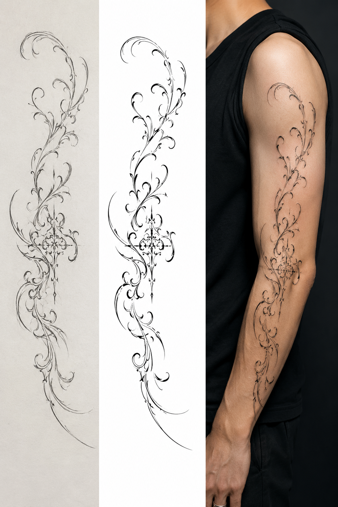
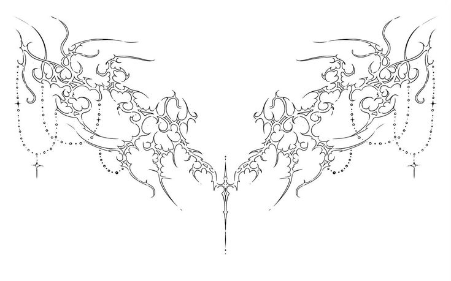

TATTOO DESIGNER & UX/UI ENTHUSIAST
🎓 Sinh viên CNKT Số — Đại học Gia Định (TP.HCM)
"Your story, my lines. Your experience, my design."
ĐẶT LỊCH NGAYTôi là Phan Nguyễn Nhân Tâm, sinh viên ngành Công nghệ Kỹ thuật Số tại Đại học Gia Định (TP.HCM). Song song việc học, tôi nhận commission thiết kế tattoo với phong cách chủ đạo: Cyber Tribal, Dark Lettering, Biomech, Custom Flash.
Tôi áp dụng tư duy UX/UI vào quy trình thiết kế tattoo: nghiên cứu khách hàng, phác thảo, prototype, testing (feedback), và hoàn thiện sản phẩm cuối cùng.
Nghe khách kể chuyện, đặt câu hỏi đúng để hiểu họ muốn gì — ngay cả khi họ chưa biết diễn tả.
Phác thảo tay 2-3 layout, dùng Midjourney tham khảo texture, gửi khách chọn hướng.
Scan phác thảo → line art Procreate → tô bóng + texture → mockup lên da thật.
Khách xem mockup, góp ý chỉnh sửa. Chốt thiết kế cuối cùng.

Khách: Nam, 26 tuổi — lạc lối sau nghỉ việc & chia tay.
Insight: Từng trầm cảm, tự học code để đổi đời → ý tưởng: Tribal bị xé toạc, nhét mạch cyberpunk vào — như tự viết lại chính mình.
Quy trình: Buổi 1 — nghe & ghi keyword, phác thô. Buổi 2 — Midjourney ref texture → phác tay full layout → scan → line art Procreate → tô bóng → mockup.
"Tâm không chỉ vẽ, mà còn kể được đúng câu chuyện tôi muốn nói. Nhìn bản final tôi thấy chính mình trong đó."

Khách: Nữ, 24 tuổi — dancer chuyên nghiệp.
Insight: Muốn thiết kế "đang chảy nhưng vẫn có gốc rễ" → ý tưởng: Rễ cây phát sáng neon cyberpunk mọc từ xương quai xanh, dây leo biomech quấn quanh.
Quy trình: Buổi 1 — nghe nhạc dancer hay dùng, ghi keyword: chảy, rễ, neon. Phác 3 layout. Buổi 2 — Midjourney ref rễ phát sáng + dây leo cơ khí → chốt layout → scan → line art Procreate → neon glow → mockup da.
"Nhìn bản thiết kế mà tôi muốn khóc. Đúng kiểu tôi muốn mà không biết nói sao — Tâm tự tìm ra được."
wocphogg006.art@gmail.com
09xx xxx xxx
Need a tattoo design that's actually yours?
Got an idea but can't draw it out?
Hit me up.